Borland Delphi / C++Builder ToolsAPI или взгляд на Borland IDE изнутри
Введение
Рано или поздно каждому профессиональному разработчику программного обеспечения становится тесной среда обитания. По мнению автора, читатель понял, что речь идет о среде разработки, в которой обитает разработчик. У кого это "дом", у кого "строительная площадка", а у кого и то, и другое. В этой статье мы рассмотрим возможность расширения нашего дома. Мы покажем, как именно можно наращивать мощность IDE своими силами, будь то среда разработки Borland Delphi или Borland C++ Builder.
У многих из вас возникало желание добавить несколько полезных функций в любимое IDE. Разработчики фирмы Borland не оставили без внимания эту полезную возможность. Они разработали набор интерфейсов, позволяющих расширять возможности среды, хотя, к сожалению, отсутствие документации по данному вопросу мешает самостоятельному изучению. Жалкие комментарии в исходных текстах не могут воспроизвести всю мощь, которую предоставляет IDE разработчику расширений. Автор статьи попытается передать читателю опыт своих изысканий и постарается своими советами уберечь читателя от многих подводных камней.
Документ построен таким образом, чтобы мы переходили от этапа к этапу от простого к сложному. Насколько это удалось, судить вам. Вместе c вами мы рассмотрим на примерах все сервисы, предоставляемые IDE Borland Delphi\C++Builder.
Итак, начнем?
Что такое ToolsAPI?
Многие спросят: "Что такое ToolsAPI?" На что смело можно ответить: ToolsAPI - это набор программных интерфейсов, позволяющих: получать информацию о происходящих в IDE событиях, вызывать функции IDE, создавать свои собственные функции, которые потом будут доступны в среде разработки. Этот набор позволяет нам создавать свои собственные меню, кнопки управления и так далее.
Этот набор интерфейсов размещен в файле ToolsAPI.pas, находящийся в директории {IDEROOT}\Source\Toolsapi\ вашего каталога Delphi\C++Builder.
Старый "стиль" и "новый стиль" ToolsAPI
Существует две модели интерфейсов ToolsAPI, или как их называют - "старый" и "новый" стили. Старый стиль был реализован в средах Delphi 3-4 и C++ Builder 3.-4. Начиная с Delphi 5 и C++ Builder 5, в среду встроена реализация нового стиля. В этом документе мы будем рассматривать только "новый стиль". "Почему?" - возможно, спросите вы. А потому, - ответит автор - что фирма Borland более не развивает интерфейсы "старого" стиля. Это не значит, что расширения, написанные в старом стиле, не будут работать. Разработчики Borland оставили API старого стиля для совместимости с предыдущими версиями IDE. Интерфейсы "старого" ToolsAPI находятся в директории Source\Toolsapi\ в следующих файлах:
1. editintf.pas 2. exptintf.pas 3. fileintf.pas 4. istreams.pas 5. toolintf.pas 6. vcsintf.pasНо они нам не понадобятся. Вы спросите, как их различать? Интерфейсы нового стиля имеют префикс "IOTA" и "INTA", а "старого" содержат префикс "TI". Поэтому, их можно различить с первого взгляда. Запомним это.
Примечание
Если читатель будет интересоваться "старым" стилем, автор рекомендует обратиться в Интернете к странице Сергея Орлика (в данный момент Сергей работает в российском представительстве Borland). К сожалению, с октября 1999 года страница автором более не поддерживается. Также на его сайте есть ссылка на PDF документ, демонстрирующий архитектуру ToolsAPI "нового" стиля, но для Delphi/C++Builder 4 (http://www.geocities.com/SiliconValley/Way/9006/otapi.pdf)
Особенности ToolsAPI в Delphi/C++ Builder различных версий
На первый взгляд IDE Delphi и C++Builder идентичны. Автор возьмет на себя смелость заявить, что и внутренних отличий так же практически нет. Во всяком случае, в разрезе ToolAPI. То есть, ToolsAPI Delphi5 тождественен ТoolsAPI С++Builder5 и так далее.
Расширения, собранные на Delphi без проблем работают в C++Builder аналогичной версии. Согласитесь, это очень удобно. Создав полезную функцию для IDE Delphi, вы всегда сможете использовать её в С++Builder той же версии.
Многие спрашивают: "А как же столь популярный Borland Jbuilder?" Jbuilder - это продукт полностью написанный на Java. Он также имеет ToolsAPI, но кардинально отличается от рассматриваемого нами.
Примечание
В этом документе Borland Jbuilder рассматриваться не будет.
Типы экспертов
Немного терминологии. "Экспертом" мы называем набор функций, расширяющий возможности IDE и выполненный в виде загружаемого модуля. В "новом" стиле нет понятия "Expert" (пережиток "старого стиля"), но есть понятие "Wizard". На самом деле это одно и тоже. Автор взял за основу слово "Эксперт" потому что, по его мнению, оно более точно характеризует предмет нашего с вами внимания.
Существуют два типа исполнения экспертов:
1. В виде пакетов (расширение файла .BPL) 2. В виде библиотек (расширение файла .DLL)В этом документе мы рассмотрим оба типа, особенности их создания и регистрации. У каждого из этих двух типов есть преимущества и недостатки.
Пакеты
Эксперты, выполненные в виде пакетов (BPL), регистрируются как обычные пакеты с компонентами прямо из среды разработки. Для этого достаточно зайти в меню "Component" -> "Install Packages" -> "Add" и выбрать BPL с экспертом.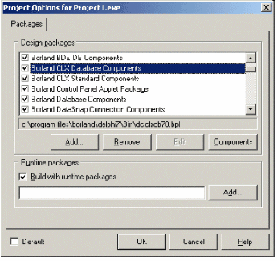
рис. 1
Чтобы временно отключить эксперта, достаточно снять галочку напротив пакета в списке этого окна. Для того, чтобы удалить его из системы, следует выбрать пакет в списке и нажать кнопку "Remove".Библиотеки
У этого типа экспертов более сложная регистрация. Для регистрации нам необходимо запустить редактор реестра вашей операционной системы (regedit.exe) и открыть ключ HKEY_CURRENT_USER\Software\Borland\Delphi(или C++Builder)\X.X\Experts, где X.X версия Delphi\C++Builder. Пример показан на рис. 2.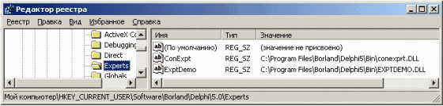
рис. 2
Имя значения может иметь произвольное название, значение должно иметь тип REG_SZ (String) и содержать путь к библиотеке с экспертом. Добавляя или удаляя значения в этой ветке, мы подключаем или отключаем расширения. Примечание:В дальнейшем мы рассмотрим, как можно создать саморегистрирующийся эксперт, выполненный в виде библиотеки.
Особенности отладки экспертов
Отладка экспертов осуществляется так же, как и отладка DLL и BPL. Для отладки необходимо в параметрах запуска указать приложение среды как Host Application (см рис. 3).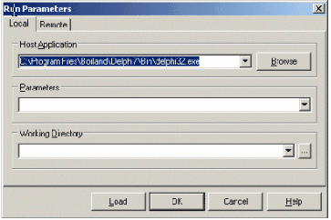
рис. 3
В параметрах проекта эксперта необходимо выключить оптимизацию и включить Stack Frames, как показано на рис. 4. После установки описанных опций, необходимо сделать Build всему проекту эксперта.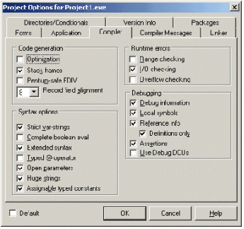
рис. 4
Под операционной системой Windows XP эксперты, разрабатываемые под Delphi5 и Delphi6, отлаживать проблематично, поскольку по не известным автору причинам отладчик отказывается загружать Debug Symbol Table. Это ведет к невозможности использования точек останова для отладчика (Break points), что приводит к невозможности осуществлять отладку. Решение этой проблемы вы найдете в Интернете на сайте компании Devrace по адресу http://www.devrace.com/files/debug_xp.zip. Это небольшой эксперт, разработанный автором статьи, после установки которого принудительно загружается Symbol Table во время подключения проекта в текущий процесс отладчика. Данный эксперт лишний раз демонстрирует полезность и практичность расширений IDE.Что такое интерфейсы и особенности их использования в ToolsAPI
Автор рассчитывает на то, что читатель уже знаком с использованием COM-интерфейсов. В противном случае, перед прочтением статьи необходимо ознакомится с концепциями и архитектурой COM, поскольку эта часть в документе затронута не будет. Также рекомендуется обратить внимание читателя на то, как развиваются интерфейсы ToolsAPI от версии к версии. Если читатель решит создавать расширения, которые будут использоваться в нескольких версиях IDE, то можно рекомендовать использовать ToolsAPI от самой низкой версии используемого IDE. Это связано с тем, что развитие интерфейсов порождает правило о совместимости сверху вниз. От высшей версии к низшей. И ни в коем случае наоборот. Можно обойтись директивами компилятора, используя те или иные методы интерфейсов в высших версиях но, по мнению автора, это очень трудоемко и может привести к путанице.Основные сервисы ToolsAPI
Итак, время заглянуть в файл ToolsAPI.pas. Этот файл содержит целый ряд сервисов, которые помогут получать информацию из IDE. Знакомьтесь - IBorlandIDEServices. Это самый "главный" интерфейс. Из него мы получим все необходимые нам интерфейсы-сервисы. Все интерфейсы, содержащие в себе слово "Services" являются производными от IBorlandIDEServices. Указатель на IBorlandIDEServices можно получить двумя способами.| 1. | Через экспортную функцию регистрации эксперта путем присвоения указателя глобальной переменной BorlandIDEServices. (в случае с библиотекой) |
| 2. | Через уже определенную глобальную переменную BorlandIDEServices (используя пакеты) |
Например, нам необходимо получить указатель на INTAServices. Для этого достаточно написать следующую функцию:
Function NTAServices: INTAServices; begin Result := (BorlandIDEServices as INTAServices); end;Аналогичные функции можно создать для всех остальных сервисов. Мы рассмотрим каждый сервис отдельно по мере изучения материала.
Первый эксперт
Первым продемонстрируем пример создания эксперта в пакете. Для этого нам необходимо загрузить среду разработки Borland Delphi и создать новый пакет (New Package). Добавим в него новый модуль (Unit). В секции interface необходимо включить объявления ToolsAPI - toolsapi.pas. Теперь пришло время рассмотреть интерфейс IOTAWizard. Этот интерфейс и есть базовый для класса эксперта. Все его методы нуждаются в реализации, даже если не будут использоваться. Все объекты, которые будут взаимодействовать с ToolsAPI, порождаются от TNotifierObject. Его реализацию можно посмотреть в том же ToolsAPI.pas. Итак, декларируем расширение:
type TFirstExpert = class(TNotifierObject, IOTAMenuWizard,
IOTAWizard)
public
function GetIDString: string;
function GetName: string;
function GetState: TWizardState;
procedure Execute;
end;
Теперь рассмотрим все методы по очереди.
| 1. | GetIDString. Этот метод должен возвращать уникальную строку для идентификации эксперта внутри IDE. Например: "MY.FIRST.EXPERT". Если IDE обнаружит два расширения с одинаковыми идентификаторами, то среда разработки выдаст сообщение об ошибке, и загрузится только первый эксперт. Об этом нужно помнить. |
| 2. | GetName. Должен вернуть имя эксперта. Например: "MyFirstExpert" |
| 3. | GetState. Имеет два состояния: wsEnabled, wsChecked. В нашем примере метод будет возвращать wsEnabled. |
| 4. | Execute. Метод выполнится, когда эксперт запустится. В данном случае будет выводить MessageBox. |
Implementation{ TFirstExpert }
procedure TFirstExpert.Execute;
begin
ShowMessage(Format('%s запущен', [GetName]));
end;
function TFirstExpert.GetIDString: string;
begin
Result := 'MY.FIRST.EXPERT';
end;
function TFirstExpert.GetName: string;
begin
Result := 'MyFirstExpert';
end;
function TFirstExpert.GetState: TWizardState;
begin
Result := [wsEnabled];
end;
Костяк готов, но эксперт требует регистрации. Поскольку рассматривается расширение в пакете, то будем использовать процедуру регистрации, принятую для пакетов. Объявим её в секции interface и реализуем в implementation.
...
procedure Register;
implementation
procedure Register;
begin
Register PackageWizard(TFirstExpert.Create);
end;
{ TFirstExpert }
...
Готовый код можно использовать как шаблон для создания экспертов на основе пакетов.
Зарегистрируем его, как описано в разделе 5. Если все сделано правильно, и никаких ошибок регистрации не произошло, то эксперт установится в IDE. Но, увы, наш первенец пока не наделен никакими функциями. Его надо заставить выполнить метод Execute. "Как?" - спросите вы. Чтобы ответить на этот вопрос автор поведет читателя дальше.
Примечание:Рассматриваемый в этой главе пример находится в каталоге FirstExpert\Package в "Приложении 1".
Методы интеграции со средой или создаем MenuWizard
Ну что ж, пришло время рассмотреть MenuWizard. Из файла ToolsAPI.pas видно, что интерфейс IOTAMenuWizard является наследником IOTAWizard. В него добавлен новый метод GetMenuText. Добавим этот интерфейс в объявление нашего эксперта:
Type TFirstExpert = class(TNotifierObject, IOTAWizard,
IOTAMenuWizard)
public
function GetIDString: string;
function GetName: string;
function GetState: TWizardState;
procedure Execute;
function GetMenuText: string;
end;
И реализуем метод, который добавит пункт меню в подменю "Help" IDE. Метод должен вернуть текст для свойства Caption добавляемого пункта:
function TFirstExpert.GetMenuText: string; begin Result := 'Execute MyFirstExpert'; end;Соберем проект. Автор хотел бы обратить ваше внимание на то, что после компиляции нам не надо перерегистрировать расширение. Это произойдет автоматически. Теперь откроем главное меню IDE "Help". На рис. 5 видно, что в меню добавлен новый пункт.
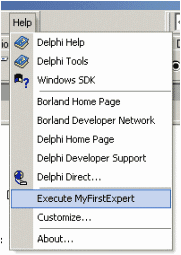
рис. 5
Выполним его. Диалог MessageBox в методе Execute не заставил себя ждать. (Рис. 6)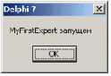
рис. 6
Это простейший способ создать расширение, которое интегрируется в меню IDE. Эксперта на базе IOTAMenuWizard нельзя заставить подключиться к другим пунктам главного меню. Но есть другие способы, которые мы рассмотрим далее в этой статье. Пришла пора ознакомиться с методом и особенностями реализации экспертов в библиотеках. Для начала создадим проект библиотеки (DLL). Для успешной регистрации эксперта в IDE необходимо реализовать две функции. Это (см. ToolsAPi.pas):| 1. | InitWizard |
| 2. | DoneWizard |
function InitWizard(const BorlandIDEServices: IBorlandIDEServices; RegisterProc: TWizardRegisterProc; var Terminate: TWizardTerminateProc): Boolean; stdcall;
| 1. | BorlandIDEServices. Константа с указателем IBorlandIDEServices. |
| 2. | RegisterProc. Указатель на процедуру регистрации. (Не будем использовать). |
| 3. | Указатель на процедуру, которая выполнится по завершении работы расширения. |
library FisrtExpertDll;
uses SysUtils, Classes, ToolsAPI, Forms,
FirstExpClassDLL in 'FirstExpClassDLL.pas';{$R *.res}
var FExpertIndex: integer;
const InvalidIndex : integer = -1;
procedure DoneWizard;
var WizardServices: IOTAWizardServices;
begin {Если регистрация была удачной то...}
if FExpertIndex <> InvalidIndex then
begin
{Получаем указатель на IOTAWizardServices
для разрегистрации расширения}
WizardServices := BorlandIDEServices as IOTAWizardServices;
{Удаление расширения из среды}
WizardServices.RemoveWizard(FExpertIndex);
{Сброс индекса расширения}
FExpertIndex := InvalidIndex;
end;
end;
function InitWizard(const BorlandIDEServices: IBorlandIDEServices;
RegisterProc: TWizardRegisterProc;
var Terminate: TWizardTerminateProc): Boolean; stdcall;
var WizardServices: IOTAWizardServices;
begin
{Проверяем определена ли глобальная переменная BorlandIDEServices.
Если нет, присваиваем ей значение}
if ToolsApi.BorlandIDEServices = nil then
ToolsApi.BorlandIDEServices := BorlandIDEServices;
{Получаем Handle приложения и присваиваем его себе,
для нормализации работы окон внутри расширения в контексте IDE}
Application.Handle := (BorlandIDEServices
as IOTAServices).GetParentHandle;
{Определяем указатель на процедуру завершения}
Terminate := DoneWizard;
{Получаем указатель на IOTAWizardServices
для регистрации расширения}
WizardServices := BorlandIDEServices as IOTAWizardServices;
{Регистрируем расширение в IDE}
FExpertIndex := WizardServices.AddWizard(TFirstExpertDLL.Create);
{Вернем ИСТИНУ, если регистрация удалась}
Result := (FExpertIndex <> InvalidIndex);
end;
{Экспорт точки входа для IDE}
exports
InitWizard name WizardEntryPoint;
begin
end.
Для регистрации такого расширения нам понадобится указатель на IOTAWizardServices. Регистрация и разрегистрация выполняется с помощью именно этого интерфейса. Это методы AddWizard и RemoveWizard соответственно.
Метод AddWizard возвращает индекс расширения в системе, в случае удачной регистрации, или значение "-1" в случае неудачи. Метод RemoveWizard удаляет расширение из IDE, используя индекс, полученный при регистрации. Как это сделать, подробно с комментариями видно из листинга.
Сохраним модуль с реализацией TfirstExpert под именем FirstExpClassDLL.pas в каталог с проектом библиотеки и удалим из него процедуру регистрации для пакетов. Расширение в DLL реализовано. Осталось подключить его в среду.
Как это сделать мы рассматривали в пятом разделе данной статьи.
Для упрощения установки библиотеки, мы можем воспользоваться функциями регистрации COM-объектов. Читателю известно, что регистрация COM-объектов в DLL осуществляется утилитой RegSvr32.exe, которая поставляется с любой операционной системой Windows. Для этого необходимо включить в исходный код проекта 2 экспортируемые функции:
| 1. | DllRegisterServer |
| 2. | DllUnRegisterServer |
function GetDLLFileName: string; var FileName: array[0..MAX_PATH] of Char; begin GetModuleFilename(hInstance, FileName, MAX_PATH - 1); Result := StrPas(FileName); end;Теперь очередь за реализацией установки:
const
constRootKey = HKEY_CURRENT_USER;
constRegKey = 'Software\Borland\Delphi\7.0\Experts';
constValueName = 'MyFirstExp';
function DllRegisterServer: HResult; stdcall;
begin
with TRegistry.Create do
try
Result := E_FAIL;
RootKey := constRootKey;
if KeyExists(constRegKey) then
begin
OpenKey(constRegKey, True);
WriteString(constValueName, GetDllFileName);
CloseKey;
Result := S_OK;
end;
finally
Free;
end;
end;
function DllUnregisterServer: HResult; stdcall;
begin
with TRegistry.Create do
try
Result := E_FAIL;
RootKey := constRootKey;
if KeyExists(constRegKey) then
begin
OpenKey(constRegKey, True);
if ValueExists(constValueName) then
begin
DeleteValue(constValueName);
CloseKey;
Result := S_OK;
end;
end;
finally
Free;
end;
end;
exports
DllRegisterServer,
DllUnregisterServer;
Из листинга видно, как происходит установка и удаление информации из системного реестра. Теперь необходимо собрать проект и установить расширение.
Как это сделать, изображено на рис. 7
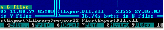
рис. 7
Результатом выполнения установки будет окно, изображенное на рис. 8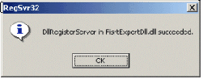
рис. 8
Удалить расширение из Registry можно той же утилитой, только с ключем -u. Можно проверить, прописан ли необходимый ключ в реестр. См. Рис. 9.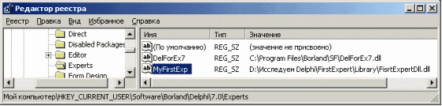
рис. 10
Запустим новый экземпляр IDE и убедимся, что расширение установилось. Правда, просто?Читатель сам должен решить, какой тип эксперта необходимо использовать в каждом конкретном случае.
Примечание:Рассматриваемый в этой главе пример находится в каталоге FirstExpert\Library в "Приложении 1."
Работаем с сервисами. Окно сообщений IDE
Теперь рассмотрим один из самых простых и полезных сервисов IDE. Автор расскажет, как управлять окном сообщений. Работа с ним осуществляется с помощью сервиса IOTAMessageServices. Обратимся в ToolAPI.pas за помощью. Рассмотрим несколько методов, а именно:
{ Добавить заголовочное сообщение }
procedure AddTitleMessage(const MessageStr: string);
{ Добавить инструментальное сообщение}
procedure AddToolMessage(const FileName, MessageStr,
PrefixStr: string; LineNumber, ColumnNumber: Integer);
{ Очистить окно сообщений }
procedure ClearAllMessages;
{ Очисить сообщения компилятора\линкера }
procedure ClearCompilerMessages;
{ Очистить инструментальные сообщения от утилит или групп }
procedure ClearToolMessages;
Для обращения к данному сервису нам будет необходима функция, возвращающая указатель на IOTAMessageServices. А поскольку этот интерфейс является сервисным, то получить его можно из глобальной переменной BorlandIDEServices.
function OTAMessageServices: IOTAMessageServices; begin Result := (BorlandIDEServices as IOTAMessageServices); end;Включим эту функцию в модуль с экспертом в секцию implementation.
Осталось только изменить реализацию Execute. Заменим MessageBox на вывод в окно сообщений IDE:
procedure TFirstExpert.Execute;
begin
OTAMessageServices.AddTitleMessage(Format('%s запущен',
[GetName]));
end;
Теперь установим и выполним расширение. Результат работы изображен на рис. 10
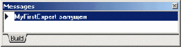
рис. 10
Примечание:Рассматриваемый в этой главе пример находится в каталоге MessageServices в "Приложении 1".
Понятие нотификаций
Что такое интерфейс нотификаций? Нотификатором называют событийный интерфейс, позволяющий получать те или иные события от IDE. Существует несколько типов нотификаторов, но необходимо отметить, все они порождены от одного базового интерфейса IOTANotifier. Такая архитектура упрощает реализацию и понимание организации перехвата событий от среды разработки. В этой статье мы не будем рассматривать все нотификаторы, которые доступны в ToolsAPI, но обязательно остановимся на ключевых моментах. Итак, снова обратимся к ToolsAPI.pas. Какие методы имеет базовый интерфейс нотификатора IOTANotifier?type IOTANotifier = interface(IUnknown) procedure AfterSave; procedure BeforeSave; procedure Destroyed; procedure Modified; end;На методах BeforeSave, AfterSave и Modified мы остановимся позже, в разделе 18. Метод Destroyed вызывается перед разрушением нотификатора. Поскольку ToolsAPI основано на интерфейсной модели, то IDE сама следит за "нужностью" того или иного объекта. Если читатель заметил, то TnotifierObject является наследником TinterfacedObject и ему ни в коем случае нельзя вызывать метод Free принудительно из кода программы. Как только количество ссылок на созданный нами объект будет равно нулю, экземпляр объекта разрушится сам. Для более подробной информации необходимо обратиться к источникам, связанным с использованием COM-интерфейсов в разделы, посвященные подсчету количества ссылок на объекты. Нам позволено только создавать, подключать свои экземпляры к IDE и отключать их. После отключения, если экземпляр более никем не используется, он разрушится сам. Это важно, не будем забывать об этом.
Нотификации IDE
Попробуем теорию на практике. Для этого нам понадобится получить указатель на IOTAServices и создать нотификатор от IOTAIDENotifier. Напишем функцию, возвращающую указатель на интерфейс необходимого нам сервиса:function OTAServices: IOTAServices; begin Result := (BorlandIDEServices as IOTAServices); end;Пришло время объявить класс нотификатора IDE:
type
TIDENotifier = class(TNotifierObject, IOTANotifier,
IOTAIDENotifier)
{From IOTANotifier}
procedure AfterSave;
procedure BeforeSave;
procedure Destroyed;
procedure Modified;
{From IOTAIDENotifier}
procedure FileNotification(NotifyCode: TOTAFileNotification;
const FileName: string;
var Cancel: Boolean);
procedure BeforeCompile(const Project: IOTAProject;
var Cancel: Boolean); overload;
procedure AfterCompile(Succeeded: Boolean); overload;
end;
Нас интересует метод FileNotification, который позволит получать сообщения об операциях с файлами в IDE. Именно его мы и будем использовать в рассматриваемом примере. Из ToolsAPI.pas видно, что параметр NotifyCode может принимать следующие значения:
Значение параметра |
Описание |
OfnFileOpening |
Перед открытием файла FileName |
OfnFileOpened |
Файл FileName открыт в IDE |
OfnFileClosing |
Перед закрытием файла FileName |
OfnDefaultDesktopLoad |
Загружены настройки для IDE по умолчанию |
OfnDefaultDesktopSave |
Сохранены настройки IDE по умолчанию |
OfnProjectDesktopLoad |
Загружены настройки для проекта FileName |
OfnProjectDesktopSave |
Сохранены настройки для проекта FileName |
OfnPackageInstalled |
Пакет FileName с компонентами или экспертами установлен в IDE |
OfnPackageUninstalled |
Пакет FileName с компонентами или экспертами удален из IDE |
OfnActiveProjectChanged |
Вызывается только при работе с группой проектов, если количество проектов более одного. Важно: данный тип отсутствует в IDE версии ниже 6. |
procedure TIDENotifier.FileNotification(
NotifyCode: TOTAFileNotification;
const FileName: string; var Cancel: Boolean);
var StringType : string;
begin
{Преобразовываем код нотификации в текстовое сообщение}
case NotifyCode of
ofnFileOpening : StringType:='ofnFileOpening';
ofnFileOpened : StringType:='ofnFileOpened';
ofnFileClosing : StringType:='ofnFileClosing';
ofnDefaultDesktopLoad : StringType:='ofnDefaultDesktopLoad';
ofnDefaultDesktopSave : StringType:='ofnDefaultDesktopSave';
ofnProjectDesktopLoad : StringType:='ofnProjectDesktopLoad';
ofnProjectDesktopSave : StringType:='ofnProjectDesktopSave';
ofnPackageInstalled : StringType:='ofnPackageInstalled';
ofnPackageUninstalled : StringType:='ofnPackageUninstalled';
ofnActiveProjectChanged : StringType:='ofnActiveProjectChanged';
end;
{Сообщаем о пришедшей нотификации в окно MessageWindow IDE}
OTAMessageServices.AddTitleMessage(Format('%s %s',
[StringType, FileName]));
end;
Осталось рассмотреть добавление и удаление нотификатора. Сервис IOTAServices для этого имеет соответствующие методы AddNotifier и RemoveNotifier.
Чтобы мы могли успешно удалить нотификатор из IDE, необходимо ввести для него значение индекса. Введем индекс как переменную класса FNotifierIndex : integer в секции Private эксперта. Мы будем осуществлять добавление нотификатора при создании эксперта и его удаление в процессе разрушения. Для этого введем объявление конструктора и деструктора:
type
TFirstExpert = class(TNotifierObject, IOTAWizard,
IOTAMenuWizard)
private
FNotifierIndex : integer;
public
constructor Create;
destructor Destroy; override;
function GetIDString: string;
function GetName: string;
function GetState: TWizardState;
procedure Execute;
function GetMenuText: string;
end;
Добавление и удаление нотификатора имеет следующую реализацию:
{ TFirstExpert }
constructor TFirstExpert.Create;
begin
FNotifierIndex := OTAServices.AddNotifier(TIDENotifier.Create);
end;
destructor TFirstExpert.Destroy;
begin
if FNotifierIndex <> -1 then
OTAServices.RemoveNotifier(FNotifierIndex);
inherited;
end;
В конструкторе создается экземпляр нотификатора объекта и его индекс сохраняется в переменной. Из деструктора видно, что если регистрация нотификатора произошла успешно, то он будет удален из IDE.
Результат работы нотификатора изображен на рис. 11.
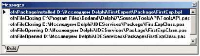
рис. 11
Примечание:Рассматриваемый в этой главе пример находится в каталоге IDEServices в "Приложении 1".
Управление напоминаниями ToDo
Рассмотрим еще один сервис, который нам предоставляет IDE - сервис управления напоминаниями ToDo. В ToolsAPi.pas он объявлен как IOTAToDoServices. Немного расширим задачу и создадим упрощенный менеджер управления напоминаниями. По сравнению с предыдущими примерами задача будет несколько сложнее, и автор постарается максимально разъяснить материал. Для решения этой задачи будет создан интерактивный эксперт, который позволит нам редактировать и удалять напоминания в текущем проекте. Итак, создадим функцию, которая обеспечит на доступ к IOTAToDoServices.function OTATODOServices: IOTATODOServices; begin Result := (BorlandIDEServices as IOTATODOServices); end;Создадим форму менеджера с основными функциями и добавим её в проект (рис. 12).
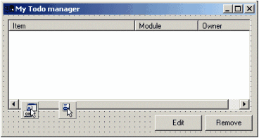
рис. 12
В конструкторе создадим форму, в деструкторе разрушим её и переопределим метод Execute у расширения для визуализации формы менеджера.constructor TFirstExpert.Create; begin frmToDoManager := TfrmToDoManager.Create(Application); end; destructor TFirstExpert.Destroy; begin FreeAndNIl(frmToDoManager); inherited; end; procedure TFirstExpert.Execute; begin if assigned(frmToDoManager) then frmToDoManager.Show; end;Определим обработчик OnShow формы нашего менеджера. В нем мы будем сканировать весь список с записями, и переносить его в наш диалог:
procedure TfrmToDoManager.FormShow(Sender: TObject);
var i: integer; Item : TListItem;
begin
ListView1.Items.BeginUpdate;
try
ListView1.Items.Clear;
OTATODOServices.UpdateList;
for i := 0 to OTATODOServices.ItemCount - 1 do
begin
Item := ListView1.Items.Add;
Item.Caption := OTATODOServices.Items[i].GetText;
Item.SubItems.Add(OTATODOServices.Items[i].GetModuleName);
Item.SubItems.Add(OTATODOServices.Items[i].GetOwner);
Item.Data := Pointer(OTATODOServices.Items[i]);
end;
finally
ListView1.Items.EndUpdate;
end;
end;
Автор просит обратить внимание на сохранение указателя на INTATODOItem в свойстве TListItem.Data. Это нужно для того, чтобы можно было вызвать методы Edit и Delete интерфейса INTATODOItem для выбранной записи в списке.
Реализуем процедуры вызова редактирования и удаления, и обработчики Update для Actions:
procedure TfrmToDoManager.ListView1DblClick(Sender: TObject);
begin
if aEdit.Enabled then aEdit.Execute;
end;
procedure TfrmToDoManager.aEditUpdate(Sender: TObject);
begin
{ TODO -oAuthor -ctest : пробное напоминание 1}
aEdit.Enabled := assigned(ListView1.Selected);
aRemove.Enabled := aEdit.Enabled;
end;
procedure TfrmToDoManager.aEditExecute(Sender: TObject);
var TODOItem : INTAToDoItem;
begin
TODOItem := INTAToDoItem(ListView1.Selected.Data);
if assigned(TODOItem) then
begin
TODOItem.Edit;
FormShow(Self);
end;
end;
procedure TfrmToDoManager.aRemoveExecute(Sender: TObject);
var TODOItem : INTAToDoItem;
begin
TODOItem := INTAToDoItem(ListView1.Selected.Data);
if assigned(TODOItem) then
begin
TODOItem.Delete;
FormShow(Self);
end;
end;
Установим эксперт. Вызовем окно из главного меню IDE "Help" -> "My TODO Manager" (Рис. 13)
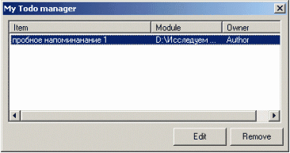
рис. 13
Выполним редактирование или удаление как показано на рис. 14.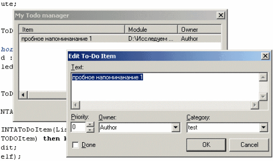
рис. 14
Сервис IOTATodoServices также поддерживает нотификации, но рассматривать мы их не будем, поскольку читатель уже ознакомился с концепциями нотификаций в предыдущей главе. На этом мы закончим рассматривать создание интерактивных расширений. Примечание:Продемонстрированный в этой главе пример находится в каталоге TodoServices в "Приложении 1".
Хотим горячие клавиши!
IDE позволяет определить пользовательские клавиши вызова (ShortCuts). За эту часть ToolsAPI отвечает IOTAKeybordServices. Этот сервис содержит много полезных методов, но мы рассмотрим именно работу с ShortCuts. Чтобы изучить работу на примере, мы параллельно рассмотрим еще один сервис - INTAServices. Он позволит нам добавить пункты меню с иконками в любое место главного меню IDE, а также работать с главным ActionList среды разработки. Мы уже создавали MenuWizard, и мы знаем об ограничениях такого метода интеграции с меню. Вы помните, что такой тип эксперта может поместить пункт меню только в меню Help IDE. Сервис INTAServices поможет решить эту проблему. Рассмотрим некоторые свойства сервиса:type INTAServices = interface(IUnknown) ... property ActionList: TCustomActionList read GetActionList; property ImageList: TCustomImageList read GetImageList; property MainMenu: TMainMenu read GetMainMenu; ... end;ActionList. Позволяет получить доступ к главному ActionList IDE
| 1. | ImageList. Позволяет получить доступ к списку с картинками 16x16 IDE |
| 2. | MainMenu. Позволяет получить доступ к главному меню среды разработки. |
function NTAServices: INTAServices; begin Result := (BorlandIDEServices as INTAServices); end;После этого в конструкторе эксперта создадим пункт меню и добавим его в главное меню.
constructor TFirstKeyExpert.Create;
var MainMenu : TMainMenu;
const constCaption = 'KeyExpert';
begin
MainMenu := NTAServices.MainMenu;
{Если пункт меню еще не добавлен, то добавить}
if assigned(MainMenu) and
not assigned(MainMenu.Items.Find(constCaption)) then
begin
FMenuItem := TMenuItem.Create(MainMenu);
MainMenu.Items.Add(FMenuItem);
FMenuItem.Caption := constCaption;
{Установить обработчик для пункта}
FMenuItem.OnClick := OnMenuClick;
end;
end;
destructor TFirstKeyExpert.Destroy;
begin
{Разрушить пункт меню }
if assigned(FMenuItem) then
FMenuItem.Free;
inherited;
end;
...
{ показать диалог, если выбран пункт меню }
procedure TFirstKeyExpert.OnMenuClick(Sender: TObject);
begin
ShowMessage('Procedure executed!')
end;
Установим эксперт. На рис. 15 видно, как эксперт интегрировался в главное меню среды разработки
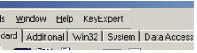
рис. 15
Выполним пункт меню (Рис. 16)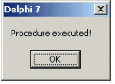
рис. 16
Половина работы сделана, осталось разобраться с IOTAKeyBoardServices. Автором в свое время был написан специальный класс для назначения "горячей клавиши" любому пункту меню. Его вы найдете в "Приложении 1" под именем KeyBindingClasses.pas. Этот класс упростит нашу задачу. Чтобы создать ShortCut и назначить его пункту меню, необходимо подключить модуль в проект и создать экземпляр класса TKeyBind. После чего следует вызвать у экземпляра метод AddKey. Параметрами являются созданный нами пункт меню и определяемая комбинация клавиш. Примечание:Более подробно можно узнать о KeyBind, изучив содержимое файла KeyBindingClasses.pas, который находится в "Приложении 1".
Итак, доработаем конструктор и деструктор:
{ TFirstKeyExpert }
constructor TFirstKeyExpert.Create;
var MainMenu : TMainMenu;
ActionList : TCustomActionList;
const constCaption = 'KeyExpert';
begin
MainMenu := NTAServices.MainMenu;
ActionList := NTAServices.ActionList;
{Если пункт меню еще не добавлен, то добавить}
if assigned(MainMenu) and assigned(ActionList)
and not assigned(MainMenu.Items.Find(constCaption)) then
begin
FAction := TAction.Create(ActionList);
FAction.ActionList := ActionList;
FAction.Caption := constCaption;
{Установить обработчик для пункта}
FAction.OnExecute := OnMenuClick;
FMenuItem := TMenuItem.Create(MainMenu);
FMenuItem.Action := FAction;
MainMenu.Items.Add(FMenuItem);
{Создать класс назначения "горячих кнопок"}
FKeyBind := TKeyBind.Create;
{Установить на созданный пункт меню комбинацию Shift+Ctrl+K}
FKeyBind.AddKey(FMenuItem, TextToShortCut('Shift+Ctrl+K'));
end;
end;
destructor TFirstKeyExpert.Destroy;
begin
FreeAndNil(FMenuItem);
FreeAndNil(FAction);
if assigned(FKeyBind) then FKeyBind.Free;
inherited;
end;
Листинг также демонстрирует, как добавить Action в главный ActionList IDE. По образу и подобию производится добавление картинок в ImageList среды разработки. Чтобы "подстегнуть" картинку к пункту меню, достаточно указать для Action индекс картинки в главном ImageList'е IDE.
Теперь после нажатия комбинации клавиш Shift+Ctrl+K на клавиатуре, появится MessageBox эксперта, изображенный на Рис. 16.
Примечание:Рассматриваемый в этой главе пример находится в каталоге KeyboardServices в "Приложении 1".
Работа с проектами
Пришло время рассмотреть один из интереснейших сервисов IDE - IOTAModuleServices. Этот сервис предоставляет методы для работы с нумератором файлов проектов. С его помощью можно получить информацию о файловой единице - модуле. Рассмотрим часть методов. Единицей, содержащей информацию о модуле, является указатель на интерфейс IOTAModule. С помощью сервиса IOTAModuleServices мы можем получить указатель на IOTAProject проекта, который открыт в IDE, а также на IOTAProjectGroup. Интерфейсы IOTAProject и IOTAProjectGroup являются наследуемыми от IOTAModule. Для начала рассмотрим, как получить указатель на интерфейс текущей рабочей группы проектов. Для этого нам понадобится метод QueryInterface модуля, который определит, является ли элемент IOTAModuleServices группой проектов. Необходимо обойти все модули в нумераторе, пока не встретится интерфейс, возвращающий указатель на IOTAProjectGroup:
function GetCurrentProjectGroup: IOTAProjectGroup;
var Services: IOTAModuleServices;
Module: IOTAModule;
I: Integer;
begin
Result := nil;
Services := BorlandIDEServices as IOTAModuleServices;
for I := 0 to Services.ModuleCount - 1 do
begin
Module := Services.Modules[I];
if Module.QueryInterface(IOTAProjectGroup, Result) = S_OK then
break;
end;
end;
Получив этот указатель, мы всегда сможем запросить любой из проектов, находящихся в группе проектов. Как это сделать? Вот еще одна полезная функция, демонстрирующая, как получить по имени проекта из текущей группы конкретный проект:
function GetProjectByFileName(FileName: string): IOTAProject;
var i: integer;
begin
for i := 0 to GetCurrentProjectGroup.ProjectCount - 1 do
if Compare(GetCurrentProjectGroup.Projects[i].FileName,
FileName) then
begin
Result := GetCurrentProjectGroup.Projects[i];
Break;
end;
end;
Свойства интерфейса IOTAModule мы не будем рассматривать в этой статье, поскольку она хорошо документирована в модуле ToolsAPI.pas
Автор опять хотел бы обратить внимание читателя на то, что указатель на интерфейс IOTAModule можно запросить только для файлов открытых в IDE. "Что это значит?" - спросите вы. Это значит, что этот интерфейс всегда можно запросить только для текущей рабочей группы и проектов в группе. На файл в составе проекта это утверждение не распространяется до тех пор, пока вы не откроете его в редакторе IDE. Поскольку IOTAModuleServices не может предоставить нам информацию обо всех файлах проекта, рассмотрим интерфейс IOTAModuleInfo.
Чтобы получить указатель на этот интерфейс необходимо сначала получить указатель IOTAProject на любой из проектов, открытых в IDE.
Рассмотрим абстрактную реализацию:
procedure EnumCurrentProjectFiles(Project : IOTAProject);
var i: integer; ModuleInfo: IOTAModuleInfo;
begin
for j := 0 to Project.GetModuleCount - 1 do
begin
ModuleInfo := Project.GetModule(j);
ShowMessage(ModuleInfo.FileName) ;
end;
end;
В отличие от IOTAModule, указатель на IOTAModuleInfo можно всегда получить на любую единицу группы проектов, отрытых в IDE. Фактически, эта информация отображена в Project Manager среды разработки.
Интерфейс IOATModuleInfo может вернуть полное имя файла, тип модуля, имя формы, дизайн-класс формы. Также интерфейс содержит метод для открытия файла в редакторе IDE, что тоже важно.
Управление настройками проекта
Borland IDE позволяет программно управлять всеми настройками проекта, которые доступны из среды разработки. Мы уже научились получать указатель на IOTAProject проекта, открытого в среде. Из него можно получить указатель на интерфейс IOTAProjectOptions, который позволит нам программно настроить параметры проекта. Рассмотрим декларацию интерфейса:
type
TOTAOptionName =
record
Name: string;
Kind: TTypeKind;
end;
TOTAOptionNameArray = array of TOTAOptionName;
IOTAOptions = interface(IUnknown)
...
procedure EditOptions;
function GetOptionNames: TOTAOptionNameArray;
property Values[const ValueName: string]: Variant;
...
end;
| 1. | Метод GetOptionNames возвращает массив имен параметров. |
| 2. | Метод EditOptions вызывает диалог настройки опций среды разработки (В данном случае для проекта. См. рис. 3) |
| 3. | С помощью свойства Values можно получать и присваивать значения опциям по именам из TOTAOptionNameArray. |
function GetOutCompilerPath: string;
var Project: IOTAProject;
Options: IOTAProjectOptions;
begin
Result := EmptyStr;
Project := GetCurrentProject;
if assigned(Project) then
begin
Options := Project.ProjectOptions;
Result := ExcludeTrailingBackslash(Options.Values['OutputDir']);
end;
end;
Любой интерфейс, порожденный от IOTAOptions, может выполнять подобные операции.
Понятие нотификатора модуля
В этом разделе мы рассмотрим нотификаторы для IOTAModule. Пример, предлагаемый вашему вниманию, очень похож на пример, рассмотренный в тринадцатом разделе. Именно он и взят за основу упражнения. Реализуем эксперт, который будет отлеживать операции над файлами, открытыми в среде разработки, и сохранять результаты работы в MessageWindow IDE. Интерфейс IOTAModule имеет два метода регистрации нотификаторов: AddNotifier и RemoveNotifier соответственно. Использование нотификатора для модуля идентично нотификатору IDE. Рассмотрим IOTAModuleNotifier и реализуем его в нашем эксперте:
type
TModuleNotifier = class(TNotifierObject, IOTANotifier,
IOTAModuleNotifier)
{From IOTANotifier}
procedure AfterSave;
procedure BeforeSave;
procedure Destroyed;
procedure Modified;
{From IOTAModuleNotifier}
function CheckOverwrite: Boolean;
procedure ModuleRenamed(const NewName: string);
end;
Рассмотрим, какие из методов нам понадобится реализовать:
| 1. | AfterSave. Вызывается после сохранения содержимого модуля на диск. |
| 2. | BeforeSave. Вызывается перед сохранением модуля на диск |
| 3. | Destroyed. Вызывается, если модуль был закрыт. |
| 4. | Modified. Вызовется, если модуль был изменен. |
| 5. | ModuleRenamed. Вызывается при выполнении операции переименования. NewName содержит новое имя модуля. |
constructor TModuleNotifier.Create(FileName: string); begin inherited Create; FFileName := Filename; end;Далее реализуем методы нотификатора для вывода информации в окно сообщений среды разработки:
{ TModuleNotifier }
procedure TModuleNotifier.AfterSave;
begin
OTAMessageServices.AddTitleMessage('AfterSave '+FFileName);
end;
procedure TModuleNotifier.BeforeSave;
begin
OTAMessageServices.AddTitleMessage('BeforeSave '+FFileName);
end;
function TModuleNotifier.CheckOverwrite: Boolean;
begin
Result := True;
end;
constructor TModuleNotifier.Create(FileName: string);
begin
inherited Create;
FFileName := Filename;
end;
destructor TModuleNotifier.Destroy;
begin
OTAMessageServices.AddTitleMessage('Closed '+FFileName);
inherited;
end;
procedure TModuleNotifier.Destroyed;
begin
end;
procedure TModuleNotifier.Modified;
begin
OTAMessageServices.AddTitleMessage('Modified '+FFileName);
end;
procedure TModuleNotifier.ModuleRenamed(const NewName: string);
begin
OTAMessageServices.AddTitleMessage('File '+FFileName+
' renamed to '+ NewFileName);
FFileName := NewFileName;
end;
Для дальнейшей работы нам понадобится изменить реализацию метода FileNotification нотификатора IDE. В нем будут использованы только значение NotifyCode = ofnFileOpened. Все остальные нотификации IDE будут проигнорированы.
В этом методе мы будем получать указатель на IOTAModule по имени файла, и присоединять к нему нотификатор. Рассмотрим изменения:
...
procedure TIDENotifier.FileNotification(
NotifyCode: TOTAFileNotification;
const FileName: string; var Cancel: Boolean);
var Module: IOTAModule;
begin
{файл открыт в редакторе IDE?}
if NotifyCode = ofnFileOpened then
begin
{ищем модуль по имени}
Module := OTAModuleServices.FindModule(FileName);
{если модуль найден - присоединить нотификатор}
if assigned(Module) then
Module.AddNotifier(TModuleNotifier.Create(Filename));
end;
end;
...
Автор хочет обратить внимание читателя на то, что при разрушении модуля (закрытии) нотификатор разрушится сам, поскольку количество ссылок, указывающих на него, будет рано нулю.
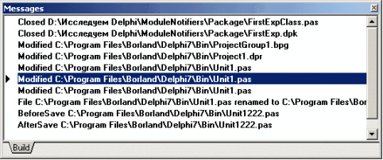
рис. 17
Результат работы нотификатора модуля изображен на рис. 17 Примечание:Пример рассмотренный в данном разделе находится в каталоге ModuleNotifiers в "Приложении 1".
Понятие редакторов
В ToolsAPI есть возможность получать указатели на интерфейсы редактора кода, редактора формы и управлять ими. Для этого в ToolsAPI.pas разработчиками Borland были любезно помещены объявления следующих интерфейсов:IOTAEditor = interface(IUnknown) ... IOTASourceEditor = interface(IOTAEditor) ... OTAFormEditor = interface(IOTAEditor)Получить интерфейс редактора можно через интерфейс IOTAModule, который мы рассматривали выше. Для этого необходимо использовать метод GetModuleFileEditor. Поскольку метод возвращает указатель на базовый интерфейс IOTAEditor, нам необходимо применить функцию Supports для определения, какой из интерфейсов нам нужен. Рассмотрим две функции, которые демонстрируют, как получить из интерфейса IOTAModule указатели на интерфейсы редакторов исходного кода IOTASourceEditor и редактора формы IOTAFormEditor.
function GetSourceEditor(Module: IOTAModule): IOTASourceEditor;
var i: integer;
begin
Result := nil;
if not assigned(Module) then
Exit;
for i := 0 to Module.GetModuleFileCount - 1 do
if Supports(Module.GetModuleFileEditor(i),
IOTASourceEditor, Result)
then break;
end;
function GetFormEditor(Module: IOTAModule): IOTAFormEditor;
var i: integer;
begin
Result := nil;
if not assigned(Module) then Exit;
for i := 0 to Module.GetModuleFileCount - 1 do
if Supports(Module.GetModuleFileEditor(i),
IOTAFormEditor, Result)
then break;
end;
Следующая функция демонстрирует, как можно получить интерфейс на IOTAEditBuffer, который позволяет управлять редактором исходного кода:
function GetEditBuffer(Module: IOTAModule;
var Buffer: IOTAEditBuffer): boolean;
var i: integer;
begin
Result := False;
if not assigned(Module) then Exit;
for i := 0 to Module.GetModuleFileCount - 1 do
if Supports(Module.GetModuleFileEditor(i),
IOTAEditBuffer, Buffer) then
begin
Result := True;
Break;
end;
end;
Интерфейсы редакторов также имеют нотификаторы, для получения событий от них. В этом разделе мы не будем заострять на них свое внимание, поскольку работа с нотификаторами рассматривалась выше.
Представления редактора
Интерфейс IOTAEditView предназначен для получения относительных координат курсора в редакторе кода, получения размеров окна редактора кода и так далее. Получить указатель на этот интерфейс очень просто, достаточно обратиться к IOTAEditorServices и запросить у него указатель на IOTAEditView с помощью свойства TopView. Например:function OTAEditorServices: IOTAEditorServices; begin Result := (BorlandIDEServices as IOTAEditorServices); end; function GetTopView: IOTAEditView; begin Result := OTAEditorServices.TopView; end;Более подробно с методами и свойствами этого интерфейса можно ознакомиться в файле ToolsAPI.pas
Создаем RepositoryWizard
Вспомним, как мы создаем новое приложение. "File"-> "New" -> "Other". В появившемся диалоге видно, какие типы приложений мы можем создать. ToolsAPI позволяет создать шаблоны для новых типов приложений. Для этого существует интерфейс IOTARepositoryWizard. Он порожден от интерфейса IOTAWizard, поэтому за основу мы возьмем наш самый первый пример. Рассмотрим декларацию интерфейса:
TFirstRepositoryExpert = class(TNotifierObject, IOTAWizard,
IOTARepositoryWizard, IOTAFormWizard)
public
{From IOTAWizard}
function GetIDString: string;
function GetName: string;
function GetState: TWizardState;
procedure Execute;
{From IOTARepositoryWizard}
function GetAuthor: string;
function GetComment: string;
function GetPage: string;
function GetGlyph: Cardinal;
end;
| 1. | GetAuthor должен возвращать имя автора |
| 2. | GetComment - комментарий |
| 3. | GetPage - имя страницы, на которой будет расположена иконка эксперта |
| 4. | GetGlyph - дескриптор иконки. В нашем случае вернем нуль. |
function TFirstRepositoryExpert.GetAuthor: string; begin Result := 'Andrew Semack'; end; function TFirstRepositoryExpert.GetComment: string; begin Result := 'my test wizard'; end; function TFirstRepositoryExpert.GetGlyph: Cardinal; begin Result := 0; end; function TFirstRepositoryExpert.GetPage: string; begin Result := 'NewMyPage'; end;Уставим эксперта в систему и вызовем диалог выбора из репозитария:
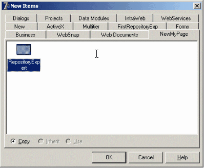
рис. 18
Эксперт зарегистрировался и выполнил возложенные на него функции. Теперь все зависит от того, как вы реализуете метод IOTAWizard.Execute. Чтобы определить закладку, используйте метод GetPage. Примечание:Пример рассмотренный в данном разделе находится в каталоге Repository в "Приложении 1".
Используем "HACK"
Иногда возникает желание реализовать, казалось бы, нереализуемое. Например, добавить кнопочку куда-нибудь туда, где её добавить средствами ToolsAPI не представляется возможным. Для этого некоторые программисты идут на "крайние меры". В "простонародье" это называется HACKING. Чтобы использовать этот метод, человеку знакомому с RTTI достаточно внедриться в процесс приложения. Мы рассмотрим основные методы, которыми пользуются программисты. Начнем с того, что наши расширения функционируют в одном и том же адресном пространстве, что и IDE. То есть, экземпляр TApplication для нас общий! Это же замечательно! Но автор просит читателя быть осторожным с этой методикой, поскольку последствия могут быть самые непредсказуемые. Допустим, читатель желает получить экземпляр TPopupMenu редактора исходного кода IDE, для того чтобы добавить туда полезную функцию. Увы, ToolsAPI не предоставляет нам такой возможности. Рассмотрим пару функций, которые помогут получить экземпляр меню, если окно редактора активно:
function GetEditWindow: TCustomForm;
var i: integer;
begin
Result := nil;
for i := 0 to Application.ComponentCount - 1 do
if Application.Components[i].Name = ('EditWindow_0') then
begin
Result := TCustomForm(Application.Components[i]);
break;
end;
end;
function GetEditWindowPopup: TPopupMenu;
var EditorForm: TCustomForm;
begin
Result := nil;
EditorForm := GetEditWindow;
if assigned(EditorForm) then
Result :=
TPopupMenu(EditorForm.FindComponent('EditorLocalMenu'));
end;
Функция GetEditWindow методом перебора форм у экземпляра TApplication ищет окно редактора исходного текста по имени. А функция GetEditWindowPopup пытается обнаружить экземпляр выпадающего меню редактора.
Как видно из примера поиск происходит по имени и типу компонента. "А как узнать имя и тип искомого элемента управления?", - спросите вы. Для этого существует два способа.
| 1. | Метод перебора элементов принадлежащих родителю (свойство Parent) через TComponent.Components |
| 2. | Использовать DAP - Delphi Application Peeper. Это разработка известного в определенных кругах донецкого разработчика Виктора Трунова. Утилита доступна на сайте компании Devrace по адресу http://www.devrace.com/dap. Это самый простой способ получить все необходимые данные. Она позволяет просматривать published свойства компонентов в RunTime, изучить установленные обработчики событий, иерархию наследования и так далее. Автор рекомендует эту утилиту всем, у кого возникает желание изучить IDE изнутри. |
Известные ошибки в ToolsAPI различных версий IDE
Известные ошибки в Delphi 7 Open Tools API (некоторые есть в Delphi/C++ Builder 6)| · | IOTAComponent.GetParent всегда возвращает nil. |
| · | Вызов IOTAEditView.SetTempMsg убирает закладку диаграмм редактора кода при нажатии кнопки "назад" в редакторе исходного кода |
| · | Некоторые из IOTAProjectOptions не работают, например IncludeVersionInfo и ModuleAttribs. Также некоторые полезные опции, такие как BreakOnException, отсутствуют. Некоторые опции, например LibraryPath, непостоянны в течение сессии. |
| · | Параметр HowMany в методе IOTAEditPosition.Delete игнорируется. В результате, метод всегда возвращает один символ. |
| · | IOTASourceEditor.SetSyntaxHighlighter отменен и больше не может использоваться. |
| · | Указание IOTAEditView.CursorPos не обновляет позицию курсора в окне редактора в строке состояния. |
| · | Среда не убирает экземпляры IOTACustomMessage из окна Message View до выгрузки эксперта. Это может привести к аварийной ситуации, так как среда обращается к невыгруженной библиотеке. Обходный путь - вызвать ClearToolMessages перед тем, как ваш эксперт выгружается, если он добавил свои сообщения. |
| · | IOTAToDoManager.ProjectChanged никогда не вызывается. |
| · | Вы не можете добавить такие горячие клавиши, как Ctrl+/ и Ctrl+K. |
| · | IOTAResourceEntry.DataSize должен делиться на 4 (выравниваться по 4-х байтной границе), иначе вы получите ошибку RLINK32 при компиляции. |
| · | TIModuleInterface.GetFormInterface не реализован и всегда возвращает нулевое значение. Вместо него вы должны использовать IOTAFormEditor. |
| · | Интерфейсы Open Tools назначения горячих клавиш иногда вызывают Aссess Violation при использовании IOTAKeyBoardServices.AddKeyboardBinding. |
| · | Каждый раз при использовании IOTAEditView.PosToCharPos вызывает Aссess Violation в dfwedit.dll. |
| · | IOTAEditorServices.TopView вызывает Aссess Violation в пакете coride, если он вызван, когда ни один файл не открыт. |
| · | Если вызвать IOTAModule.GetModuleFileCount с открытым модулем без связанной формы, он возвращает 2, но если вызвать IOTAModule.GetModuleFileEditor с индексом 1, возникает Aссess Violation, и индекс 2 возвращает файл *.h. |
| · | Установка опции проекта LibDir при использовании OTAProjectOptions.Values выдает Aссess Violation. |
| · | Вызов IOTAModuleServices.OpenProject в файле BPG приводит к аварийному закрытию среды. Вместо этого используйте IOTAModuleServices.OpenFile. |
| · | При создании в IOTAProjectGroup.FileName, вы не получаете полное имя пути. Вместо него используйте IOTAModule, который реализует IOTAProjectGroup. Его свойство FileName выдаст полный путь. |
| · | Опции проекта MajorVersion, MinorVersion, Release, и Build не обновляют опции диалога проекта при их определении. |
| · | Вы не можете использовать интерфейсы для назначения горячих клавиш типа Ctrl+Enter, Shift+Enter. |
| · | При открытии файла BPG, IOTAIDENotifier отошлет параметр с пустым именем файла вместе с ofnFileOpened в метод FileNotification. |
В среде возникают Aссess Violation или I/O ошибки при задании имени файла без полного пути при использовании IOTAProjectCreator.GetFileName.